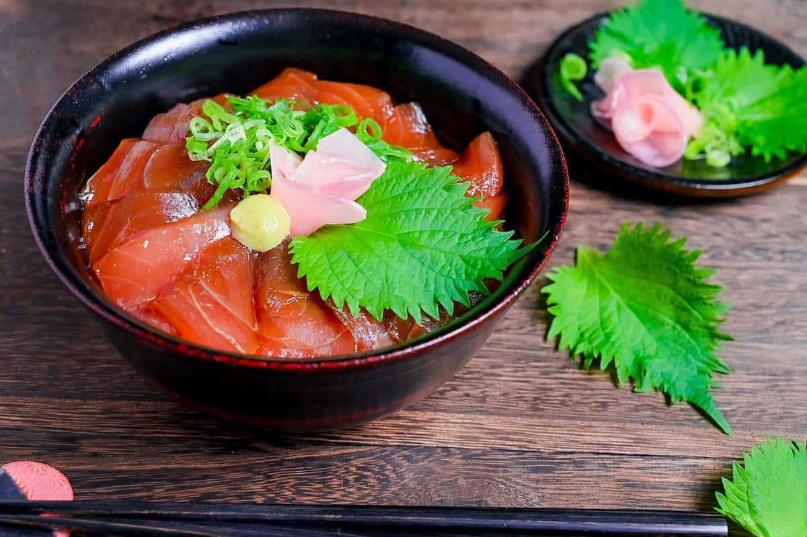

Tekkadon is a simple Japanese dish that consists of steamed, vinegar-flavored rice that is topped with pieces of sashimi-style, raw tuna. The dish is often garnished with strips of nori seaweed and sliced scallions and is usually served with a soy sauce on the side. The term is sometimes used interchangeably with maguro zuke don—a similar dish that incorporates marinated pieces of tuna and which is usually served without a dipping sauce on the side. Tekkadon belongs to the group of donburi dishes, and it can be enjoyed as a light main course.
Meal prep time : 1 hour 20 minutes
Servings : 1